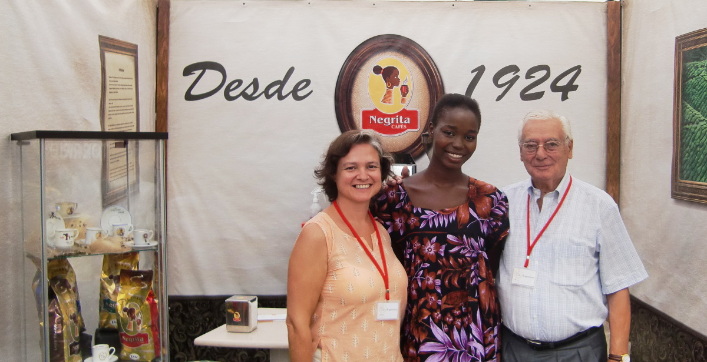

Fundada em 1924, a Negrita nasceu no centro de Lisboa, da vontade de meia dúzia de sócios, na forma de uma sociedade limitada.
Durante anos, foi armazém de mercearias, torrefacção de café, cevada, chicória, amendoim e moagem de especiarias. Inicialmente, as torras eram feitas a lenha, em torradores de bola e em máquinas de ar quente Probat.
A partir dos anos 70, diminui as actividades de armazenamento de mercearias e começa a importar café.
Com o desenvolvimento urbanístico à sua volta, começaram a surgir problemas de origem ambiental. Mais tarde, o estreitamento das exigências do mercado em termos de qualidade dos produtos, e ainda o desejável aumento de produtividade alavancaram uma mudança profunda na Negrita.
Com o capital detido na sua totalidade por familiares de um fundador, passa a Sociedade Anónima e realizam-se as primeiras grandes alterações no sistema produtivo. A lenha deu lugar ao gás natural, as velhas máquinas a modernos torradores, com torras controladas por computador. Para a limpeza dos efluentes gasosos, foi instalado um queimador de fumos.
Segue-se o sistema de armazenamento de cafés torrados em silos, com gestão e execução de blends computorizada.
Em 2008, com a entrada em funcionamento de um novo software na área da produção e ligação ao sistema de gestão comercial/facturação, foram garantidos os requisitos para o cumprimento da rastreabilidade.
Sendo uma das torrefacções mais antigas do país, a empresa Cafés Negrita, S.A., além de continuar a trabalhar as marcas próprias "Negrita" e "Carioca", está também vocacionada para o fabrico e empacotamento de blends para outras marcas, dando-lhes a garantia de qualidade que o seu passado e um moderno equipamento lhe conferem.

The Guardian: 20 of the best food tours around the world
O Corvo: Cafés Negrita: uma das últimas torrefacções de Lisboa funciona nos Anjos
Lisboa Secreta: Cafés Negrita diz-te alguma coisa?
Assins e Assados: Negrita Cafés - bem no centro de Lisboa
Garfadas Online: Os cafés Negrita